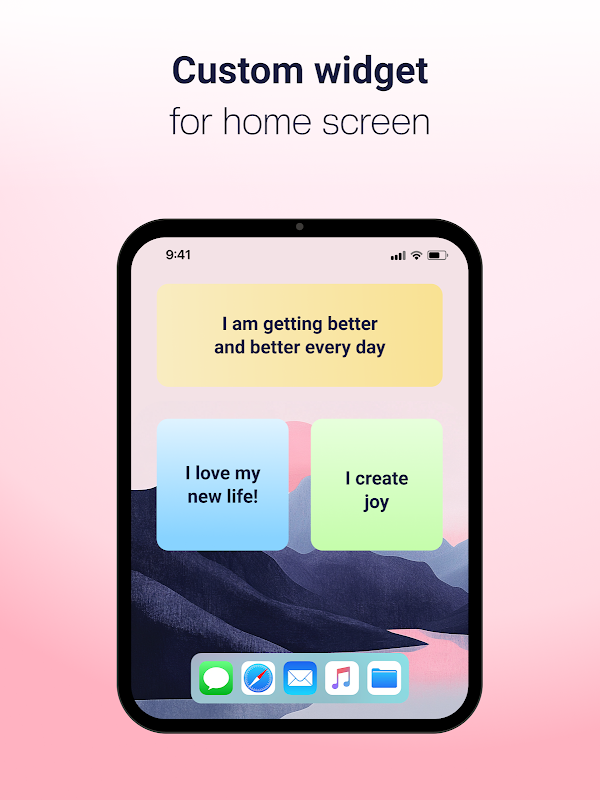
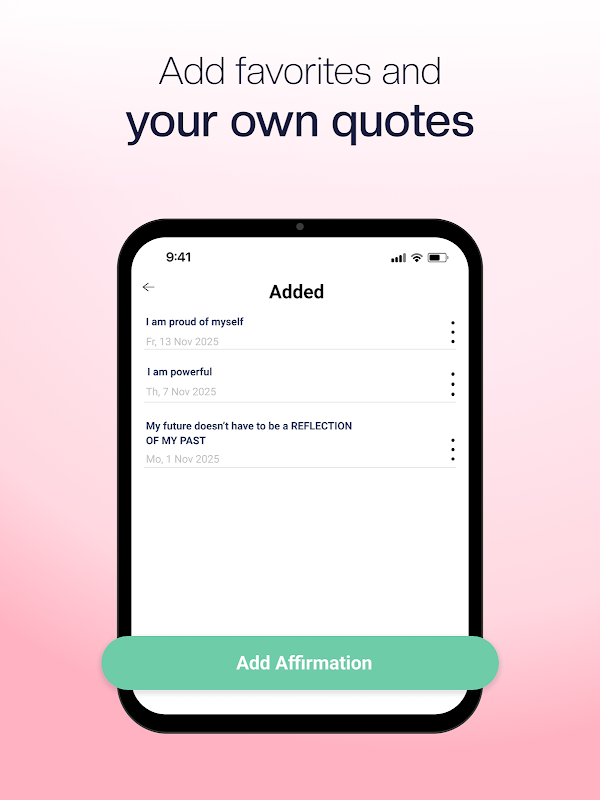

Motivation 快问快答：一款能在手表上推语录的 App
整理了关于 Motivation 的 8 个最常被问到的问题——它是什么、谁适合装、核心功能怎么用、有哪些坑，一次说清。
整理一篇关于 Motivation 的快问快答，把你可能想问的都问了。
它到底是什么？
去Motivation官网看就知道，它是一款每天给你推几句励志语录的手机应用。它不像别的语录 App 那样只在应用内甩一张卡片——它的送达路径铺得比较全：桌面小组件、通知提醒、甚至智能手表表盘都能推。核心思路是"碎片化时刻看到一句对味的话"，不是让你打开 App 专门读一堆。
谁适合装？
需要日常心理暗示、或者喜欢被励志句子包围的人。具体说，就是早晨起床想第一眼看到一句打气的话、开会间隙抬腕想被提醒一下、跑步跑到一半想被拽回来的人。如果你本身对这类语录无感，装了也大概率会删掉——别勉强。
怎么装？
安卓用户去 Google Play 搜 Motivation 就行，iOS 用户走 App Store。安装包体积不大，装上之后首次启动会让你选几个感兴趣的分类——这步别贪多，先勾 2 到 3 个最贴合的，留到后面再调也来得及。想要安装包的话，从下载拿就行。

三条送达路径怎么设？
三条路径指的是应用内主界面、桌面小组件、通知提醒——每条路径的分类偏好是独立的，你可以给小组件勾"职场+自律"、给提醒勾"运动+健康"、给手表勾"极简+禅意"，互不干扰。手表那条路径（Wear OS 和 Apple Watch 都支持）比较特别，它相当于贴身版的送达，抬腕就能看，适合运动时或者开会偷偷瞟一眼的场景。
收藏、读过、自建语录三者有什么区别？
收藏是你主动点底部心形按钮攒下来的，少而精，都是真有共鸣的句子；读过是你被动刷过的所有语录，多而杂；自建语录是自己写的句子，会混进每日轮换里偶尔推到你面前——这是 Motivation 被低估的一个功能，大多数同类 App 只给你看别人写的，它让你把自己的话也加进去。自建语录在 Profile → Your quotes 里添加，换设备或重装应用会丢，iOS 用户靠 iCloud 备份能兜住，安卓用户得手动重新加，具体操作细节可以查Motivation文档。

不想看到某类内容怎么办？
有两个工具：Muted words 和 Dislike。Muted words 是全局屏蔽关键词，输一个词，应用内、小组件、提醒、手表所有路径里包含这个词的内容全部过滤掉——适合有明确不想看的主题，比如前任名字、某个品牌、某类宗教语录。Dislike 只影响单条语录，点底部分享按钮就能选，这条语录不会再出现在当前路径，但不会波及小组件或提醒。如果两个都用了还是经常碰到不对味的，回头看一眼自己的分类偏好是不是勾得太杂了，每条路径留 2 到 3 个最贴合的比勾 10 个精准得多。
有 Premium 吗？值不值得买？
有。免费版能用收藏功能，但 Premium 能创建更多合集、搜索完整语录库，还有一些进阶的外观自定义。要不要买看你用不用得上那些功能——如果只是每天看几句，免费版够了；如果开始认真整理自己的收藏、或者想折腾外观，升级就有意义。
最大的坑是什么？
两个。一是自建语录和收藏的语录换设备或重装会丢，别随便卸载；二是分类勾太多等于放弃精准性，很多人上来就勾七八个分类，结果推出来的东西四不像，反倒觉得 App 没用。解决方式就是：每条路径先从 2 到 3 个分类开始用，不对味再调，别贪多。
这套资料在GitHub、Gitee 和 GitCode 三个仓库都同步维护，国内用户选 Gitee 或 GitCode 访问更顺。
最后一句：如果你需要一个在碎片化时刻给你递一句打气话的工具，Motivation 值得装。